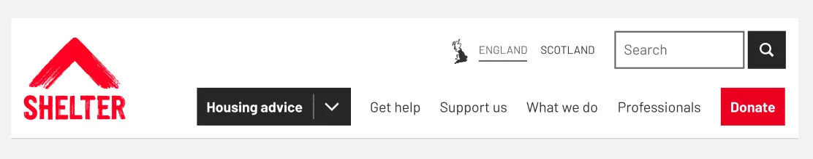
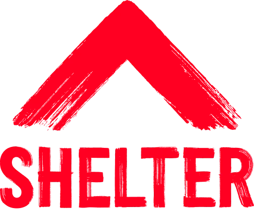
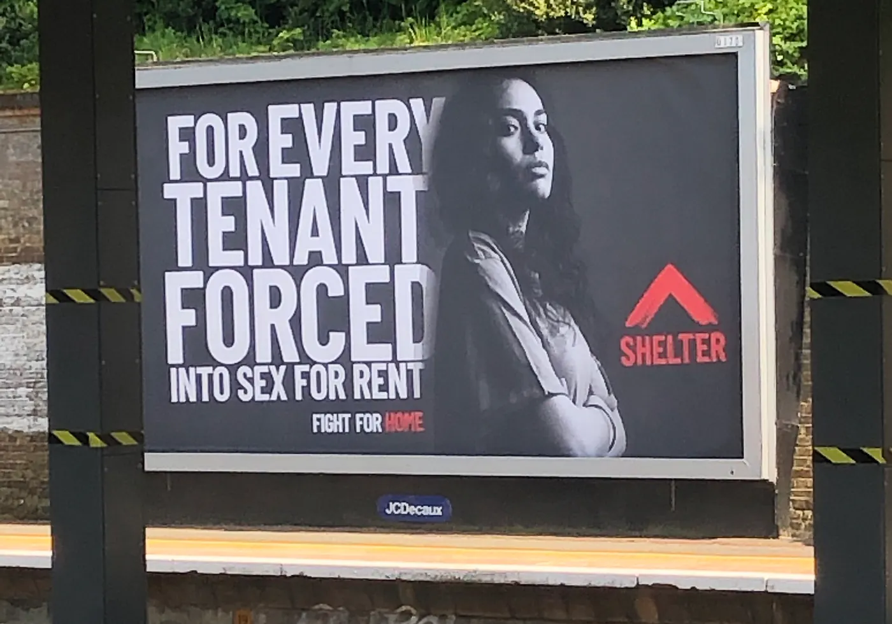
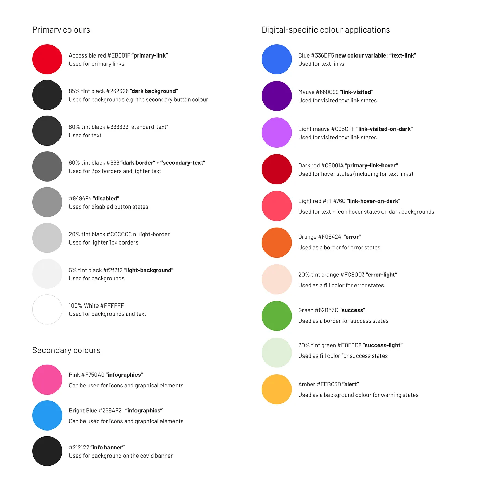
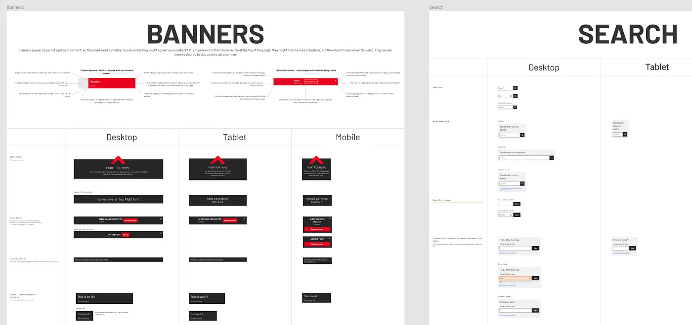
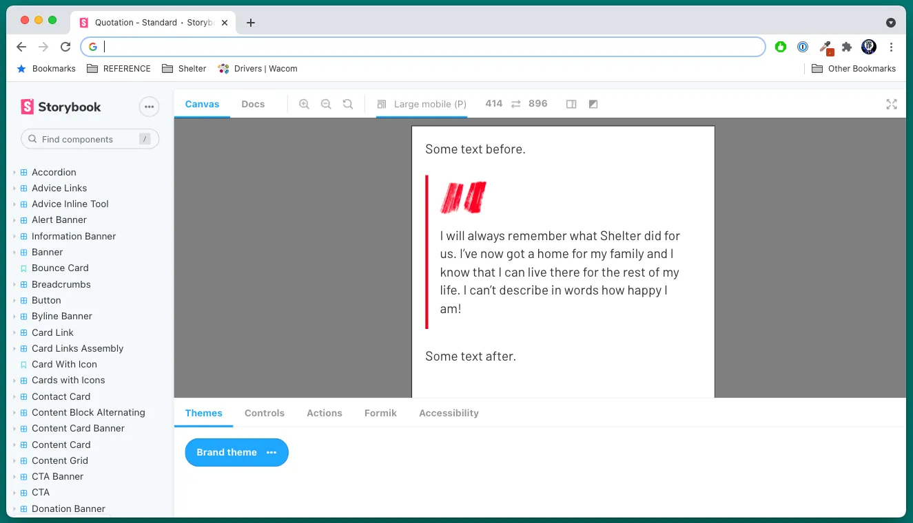
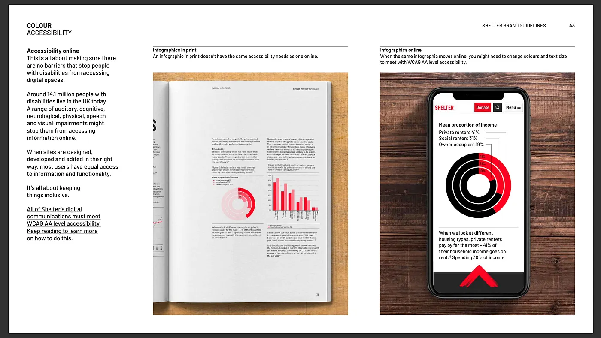

Shelter — a design system, and the team behind it
Five years across Shelter and Shelter Scotland: building the pattern library and design system through the charity's rebrand, then leading the digital estate for Scotland as Product Lead.

Background
Shelter is one of the UK's foremost homelessness charities, campaigning for the universal right to a safe home and providing housing advice to people in crisis. Its digital estate has to do two quite different jobs at once: deliver urgent, legally accurate advice to people at their most vulnerable, and make the case for change loudly enough to shift policy.
I joined the Scotland team in 2019 as its sole UX designer, moved to the wider Shelter organisation as Senior UX Designer, and returned to Shelter Scotland as Product Lead in 2022. That arc meant working on the same estate from three different angles — hands-on design, systems and standards, then strategy and team.
The rebrand
Shelter's rebrand replaced a conventional wordmark with a rough red brushstroke — deliberately urgent and unpolished, closer to protest than to corporate charity. Translating that into a digital system was the interesting problem: a brand built on raw energy still has to produce legible, accessible, repeatable interface components.
I worked alongside Caylee Farndon Taylor on the digital side of the rebrand, which she has written about in detail on UX Collective ↗.


Building the system
I built the pattern library and design system that carried the new brand into every digital surface. The work ran from colour tokens and type through to fully specified, documented components — each defined once, then reused across advice, fundraising and campaigns rather than rebuilt per team.
- Named colour variables with defined roles, so decisions were encoded in the system rather than left to individual judgement.
- Component specifications across desktop, tablet and mobile, with usage rules for when each pattern applies.
- A Storybook component library giving developers a live, themed reference rather than static artwork.
- Documentation written for the whole team — content designers and developers as much as designers.

primary-link, standard-text, error, disabled — including a separate blue for text links, since red alone couldn't carry both brand and link affordance accessibly.

Accessibility as a constraint, not a pass
Every digital surface had to meet WCAG 2.1 AA. For an audience that includes people in housing crisis — often on older devices, poor connections, or using assistive technology — that standard is not a compliance exercise. It decides whether someone can reach advice at all.
The constraint shaped the system rather than being applied at the end. The brand red could not carry link states at an accessible contrast, so the digital palette introduced a dedicated blue for text links and a defined set of state colours for error, success, alert and disabled. Print and digital were allowed to diverge where the medium demanded it.

Leading digital for Scotland
As Product Lead I was responsible for Shelter Scotland's digital estate and for keeping it aligned with the mission. I led a multidisciplinary team of eight — a UX designer, a senior developer, a user researcher and five content designers.
- Building and maintaining a digital roadmap balancing fundraising, housing advice and campaigns.
- Advising on design and user testing, with a focus on inclusivity and accessibility.
- Managing the Shelter Scotland design system for consistency across platforms.
- Running training to upskill the team and improve delivery.
- Managing budgets and aligning stakeholders across leadership, delivery and external partners.
The accomplishment I'd point to is not a redesign but a reach one: making the website more inclusive, so a wider range of people could get to essential housing advice and support.
Her UX knowledge is top-notch, and she always found the right balance between business goals and technical realities. A clear and constructive communicator who kept quality consistently high.
Amanda Collins — Head of Communications & Engagement, Shelter Scotland